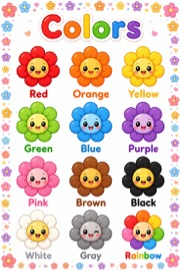

SECONDARY PAGE
Discover the 12 months of the year

Discover how each month of the year brings new seasons, events and changes. This activity helps children learn how time moves through the year.
Discover our five sense

Learn how each sense helps us understand and experience the world around us. This learning experience encourages curiosity, observation and a better understanding of the human body.
Explore the world of colors

Identify and learn about different colors through fun and engaging activities. This colorful learning experience encourages children to recognize and name colors in an enjoyable way.